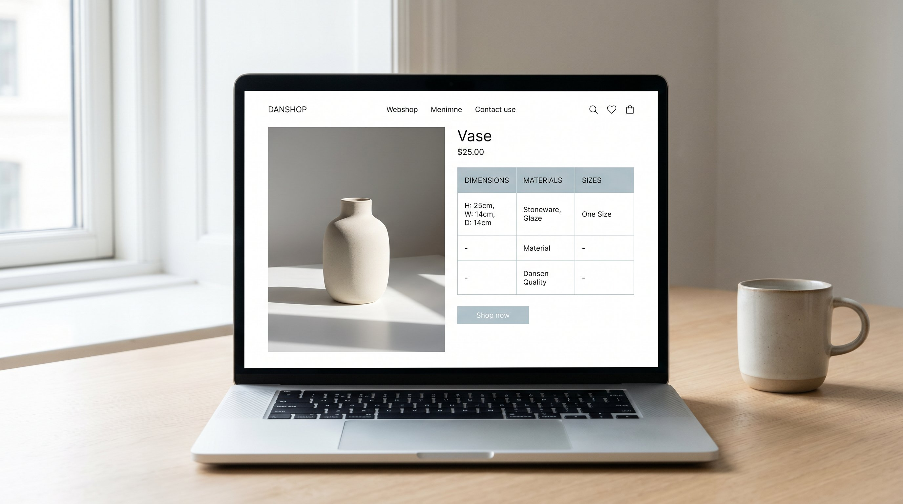

Der er en direkte linje fra din produktside til dit lager. Det er ikke en abstrakt forbindelse. Når din produktbeskrivelse er upræcis, køber kunden noget der ikke matcher forventningen. Varen returneres. Den lander tilbage på dit lager, kræver håndtering, genopretning og maaskle nedskrivning. Det er en kaedereaktion der starter med det du skriver på produktsiden.
De fleste webshop-ejere tænker på produktbeskrivelser som et salgsvaerktoj. Det er rigtigt. Men de er også et lager-management-vaerktoj. En præcis produktbeskrivelse er den bedste forebyggelse mod unnoedige returneringer.
Denne artikel gennemgår sammenaengen, hvad du skal sætte på dine produktsider, og hvad det giver dig på bundlinjen.
👉 SmartPack giver dig returrate og returarsager pr. produkt saa du kan prioritere dine produktsider rigtigt. Se systemet
Sammenaengen: information forebygger returner
Analyser returnerede varer på tvaers af produktkategorier, og et maonster traeder frem: 60-75% af returneringerne skyldes informationsgab, ikke produktfejl. Kunden returnerer ikke fordi produktet er dårligt. De returnerer fordi det ikke var hvad de troede de købte.
Det er en afgørenf pointe. Det betyder at du kan reducere en stor del af dine returneringer uden at ændre en eneste ting ved dine produkter. Du skal ændre det du fortaeller om dem.
De syv elementer der reducerer returneringer
- Præcise maal i centimeter. Angiv laengde, bredde, højde og vaegt eksplicit. For tojprodukter: bystmaaling, talje, hofte, laengde. For mobler: alle dimensioner inkl. monteret vs. sammenklappet. Maalafvigelse er en af de hyppigste returarsager i bolig og elektronik.
- Størrelsesvejledning med cm-maal. "S, M, L" er utilstrækkeligt. Vis en tabel med cm-maal pr. størrelse. Vis hvilken størrelse og hvad højde modellen på billedet er. "Modellen er 172 cm og baer størrelse M" er konkret information kunden kan bruge.
- Materialesammensætning med procenter. "Bloed stof" er ubrugeligt. "80% bomuld, 18% polyester, 2% elastan" giver kunden viden om vaskeegenskaber, draapering og hold. Det er også relevant for kunder med allergier eller særlige krav.
- Billeder fra flere vinkler og i brug. Et produktbillede på hvid baggrund er utilstrækkelig. Vis produktet i brug. Vis det i et rum med et referencepunkt for skala. Vis detaljer: syninger, overflader, lukkemekanismer. Jo mere kunden kan se, desto faerre overraskelser.
- Video eller 360-visning. særligt for varer med passform eller kompleks geometri. En 30-sekunders video af en jakke der bevaeger sig på en person, kommunikerer mere om draapering og passform end ti statiske billeder.
- Anmeldelser med størrelsesfeedback. Kunder der skriver "Køb en størrelse op, går smalt" giver næste køber information du ikke kan give selv. Tilskynd anmelderen til at kommentere på størrelse og passform specifikt.
- FAQ pr. produkt. De spoergsmaal der oftere stilles om et specifikt produkt, bor besvares direkte på produktsiden. Kunder der får svar på den kritiske tvivl, konverterer og returnerer laengere.
Produktbeskrivelse og lageromkostning: regnestykket
Lad os gøre det konkret. Antag du har et produkt med 25% returrate og sals 200 stk. om maaneden. Det er 50 returneringer. Hver retur koster dig 80 kr. i håndtering = 4.000 kr. maanedligt i returomkostning på dette ene produkt.
Du forbedrer produktbeskrivelsen: tilfoej maaltabel, bedre billeder, størrelsesvejledning. Returratten falder til 15%. Det er 30 returneringer om maaneden i stedet for 50. Du sparer 20 returneringer x 80 kr. = 1.600 kr. maanedligt på eet produkt. På et år er det 19.200 kr. sparet på eet produkt ved at forbedre en produktside.
Ganger du det på de produkter i dit sortiment med hoj returrate, er besparelsespotentialet vasentligt.
Hvor du skal starte
Start med dine produkter med den højeste returrate. Sorteer dine produkter efter returrate (højest oeverst) og analyser returarsagerne for de toppe 10-15%. Hvad returnerer kunderne pga. af? Maal? Størrelse? Farveforskel? Materialekvalitet?
Laes returarsagerne som en liste over hvad produktsiden mangler at fortaelle. Tilfoej det. Maael returratten de næste 30-60 dage. Det er sjaldent at en systematisk forbedring af produktinformationen ikke reducerer returratten markant.